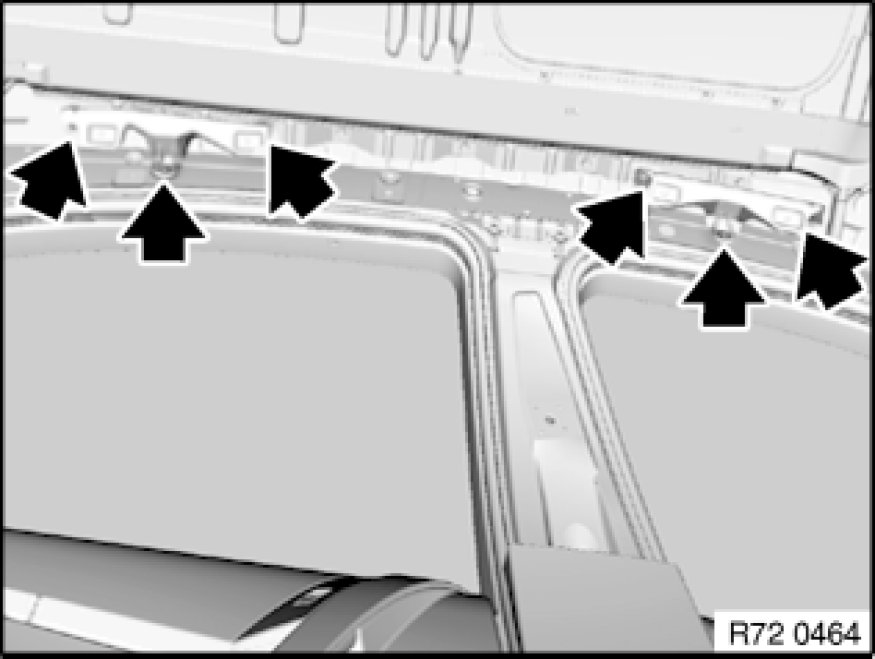
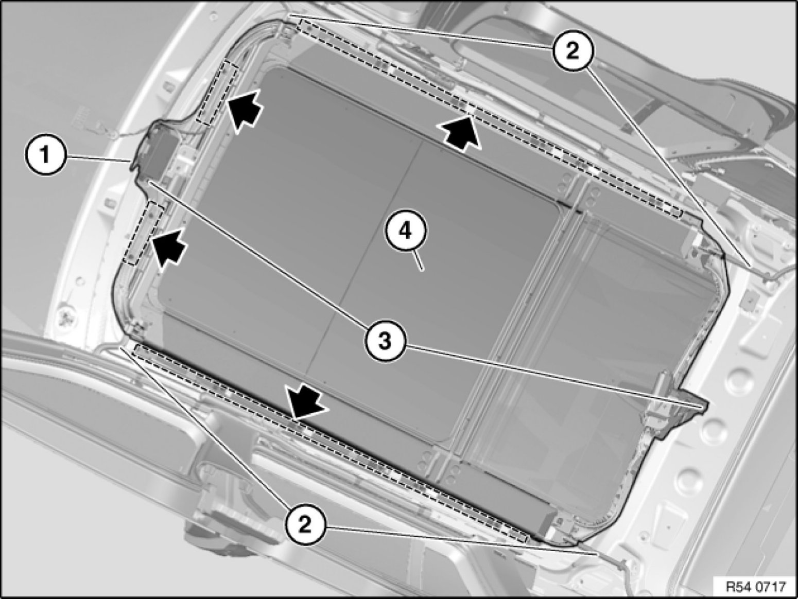
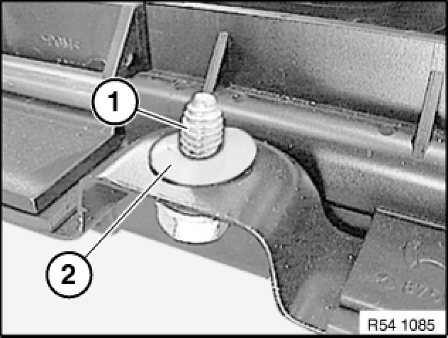
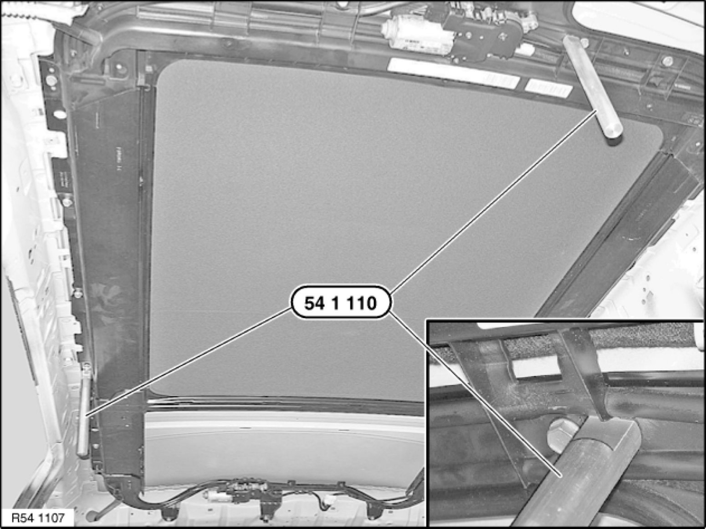

54 12 211 Removing and Installing Complete Glass Slide/Tilt Sunroof
54 13 080 - Removing and installing complete glass slide/tilt sunroof

Special tools required:
- 54 1 110 Tools and Equipment

Necessary preliminary tasks:
- Remove roofliner 51 44 013 Removing And Installing Roofliner (On Version With Panorama Sunroof)
- Open rear lid
E53 only:
- Partially remove rear-compartment head airbag.
Important!
Two persons are required to help in removing the glass slide/tilt sunroof.

E61/E83 only:
Remove holder for handles on left and right:
- Release screws.
- Remove holder.

- Unlock and disconnect plug (1)
- Detach water drain hoses (2)
Note: Check hoses for damage and moisten with water before fitting
- Release screws in marked area (when installing: fit washers on front side)
Tightening torque: 54 12 02AZ 54 12 Mechanical Components, Panorama Sunroof.
- Helper must hold glass sunroof to prevent it falling out.
- Release screws (3) on and carefully lower slide/tilt sunroof (4).
Important!
Do not damage any surrounding parts when removing slide/tilt sunroof (4).
- Remove slide/tilt sunroof (4) completely (through rear lid at rear).

- Carry out vehicle programming/coding Programming and Relearning

Installation:
If necessary, remove fabric adhesive tape.
To stop grating noises, secure all screws (1) prior to installation with plastic washers (2).
If the standard screws can no longer grip, use "repair screws" (have larger threads).

Installation:
To align panorama sunroof to body-cutout, insert screws and tighten loosely.
Panorama sunroof must still be able to move in the body-cutout.
On account of leaks, panorama sunroof must be exactly aligned to body-cutout.
Insert special tool 54 1 110 Tools and Equipment into centering bores up to stop in panorama sunroof and body.
Tighten down screws.
Tightening torque: 54 12 02AZ 54 12 Mechanical Components, Panorama Sunroof.
E53 only:
Side centering bore omitted on body side.
Align panorama sunroof over front centering bore in longitudinal direction and align at sides over glass cover distance to body. (See next work step).
Important!
Do not crush any cables when fitting the glass slide/tilt sunroof.
Initialize Testing and Inspection glass slide/tilt sunroof.